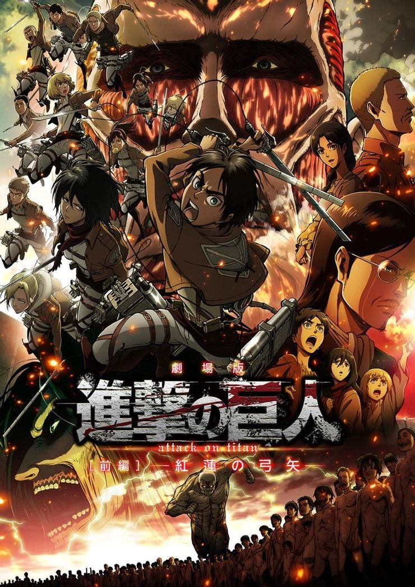
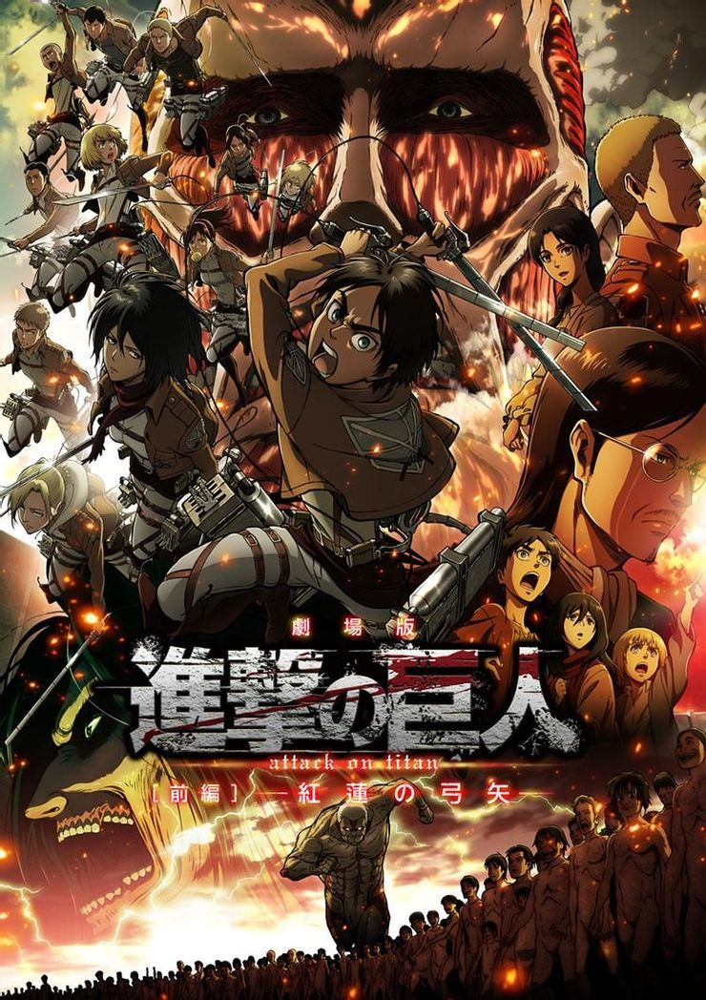
Attack on Titan(2013)
Several hundred years ago, humans were nearly exterminated by giants. Giants are typically several stories tall, seem to have no intelligence, devour human beings and, worst of all, seem to do it for the pleasure rather than as a food source. A small percentage of humanity survived by walling themselves in a city protected by extremely high walls, even taller than the biggest of giants. Flash forward to the present and the city has not seen a giant in over 100 years. Teenage boy Eren and his foster sister Mikasa witness something horrific as the city walls are destroyed by a super giant that appears out of thin air. As the smaller giants flood the city, the two kids watch in horror as their mother is eaten alive. After seeing this, Eren took oath that he will remove the existense of titan from history and take revenge for all of humanity.
Download all Attack on Titan Season 2 episodes
 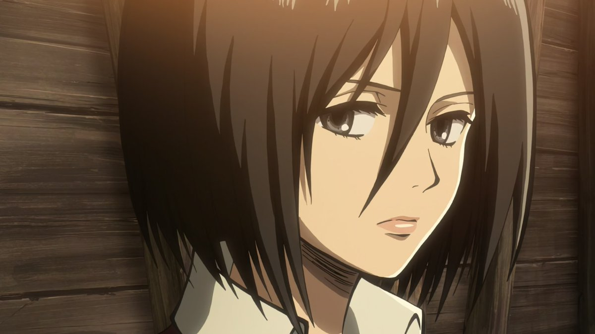
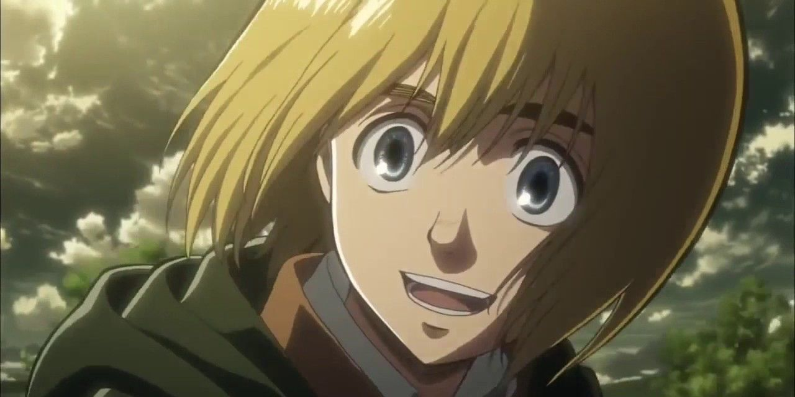
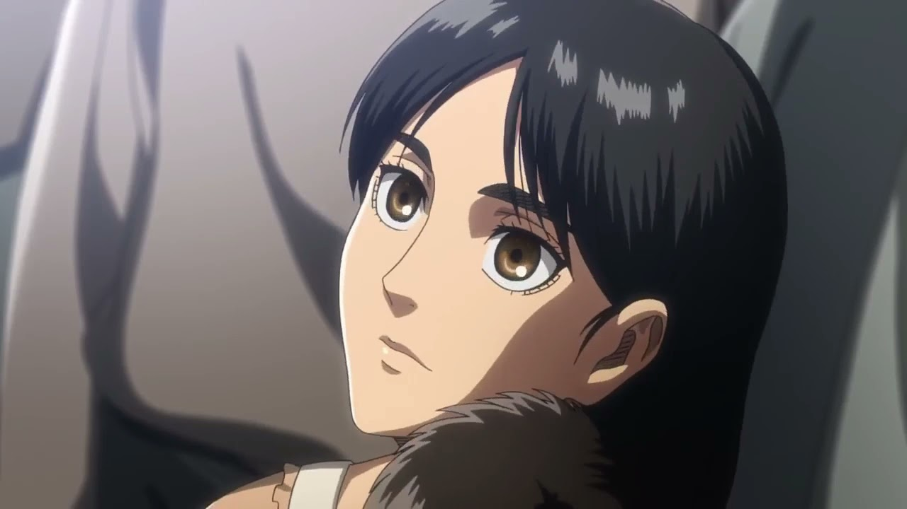
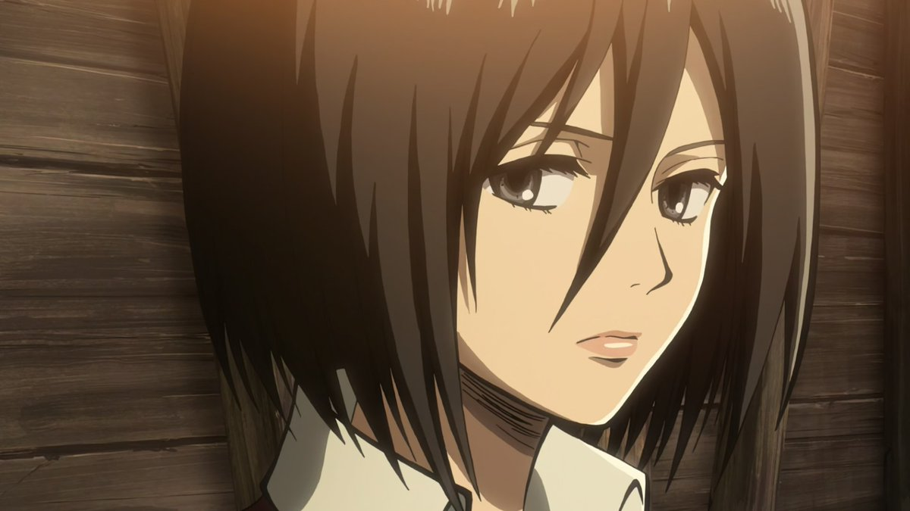
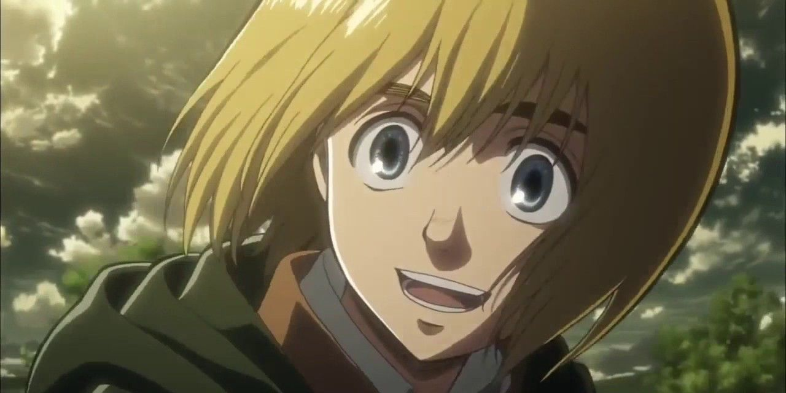
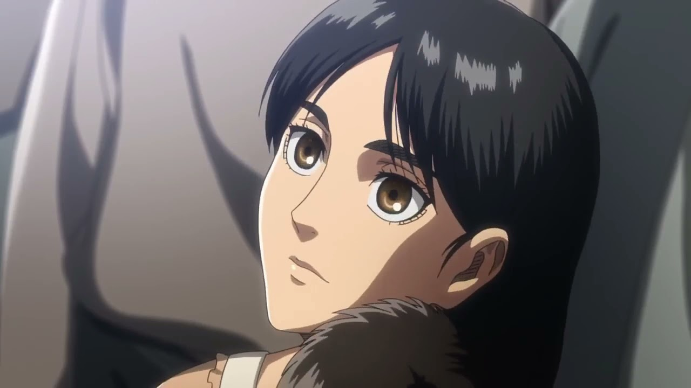
 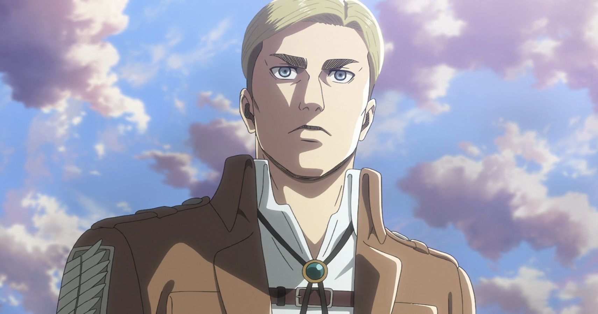
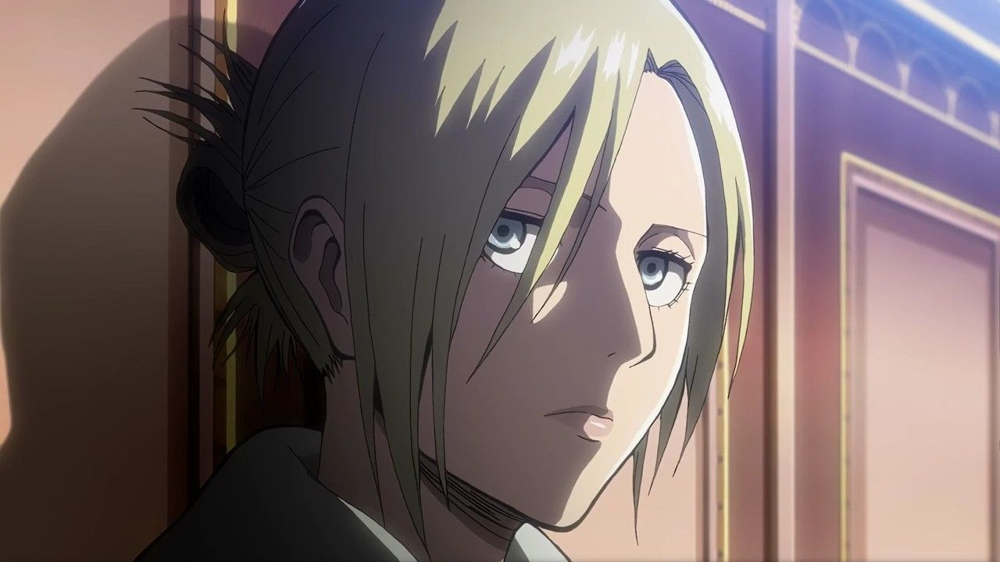
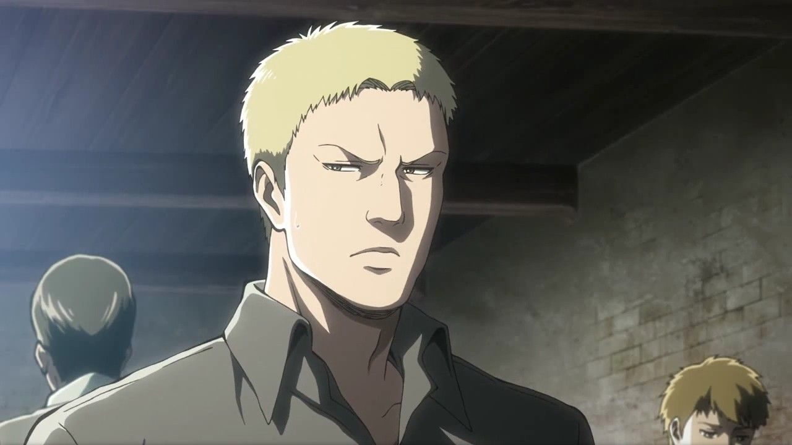
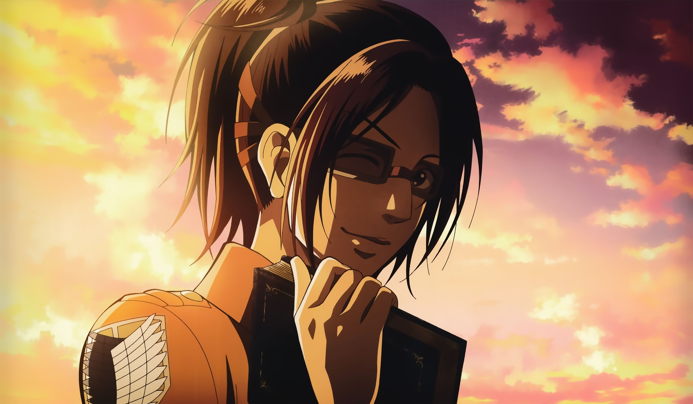
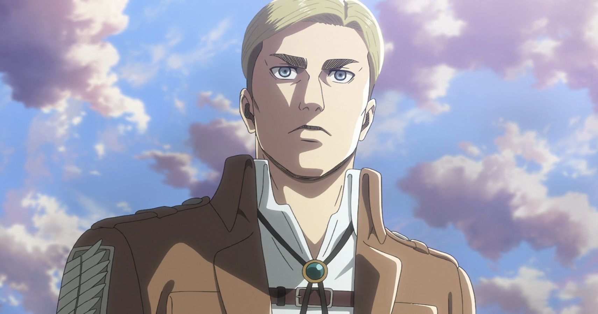
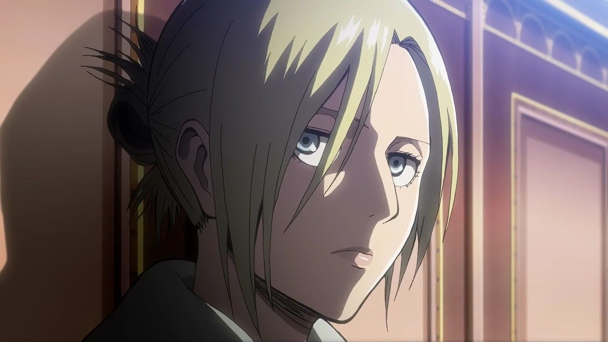
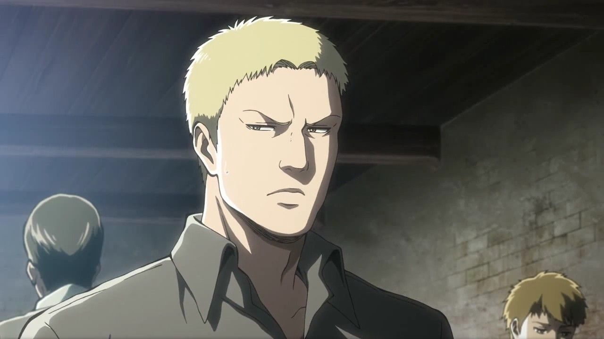
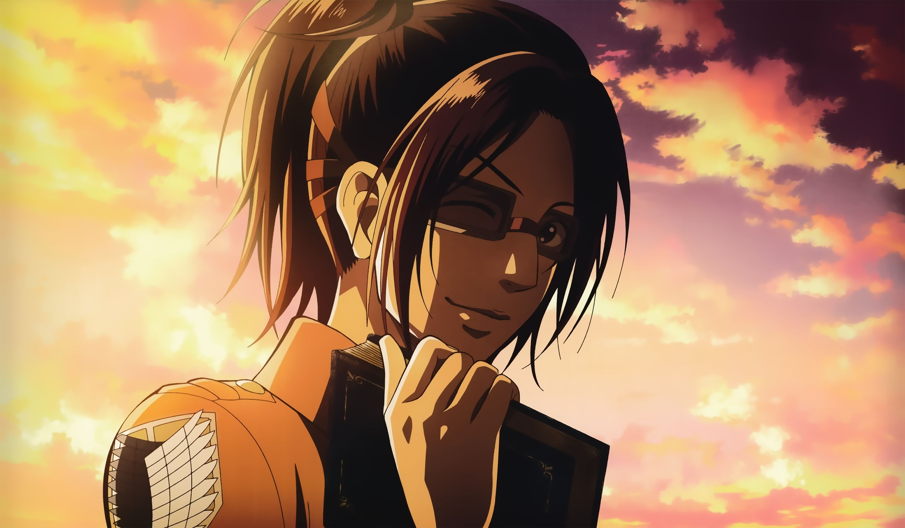